用法：A型题点选项即判；X型题先多选、再点【判卷】；答完自动展开解析。刷完本课再过一遍底部【本课速记卡】，效果最好。
一、充血（淤血）6 题
A型·单选Q1P1 · 充血
动脉性（主动性）充血的典型例子是
答案与解析
答案：C
动脉性/主动性充血（充血）：如炎症。静脉性/被动性充血（淤血）：血液淤积在小静脉、毛细血管（左心衰肺淤血、右心衰肝淤血）。
📖 讲义定位：P1 · 充血
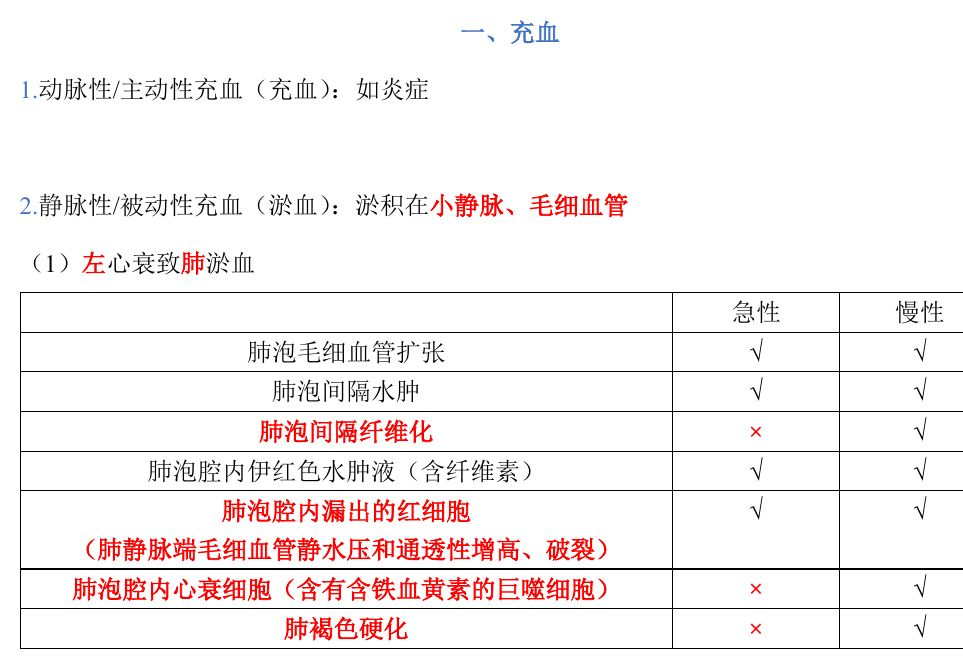
📷 讲义原图 · P1 · 充血
A型·单选Q2P1 · 肺淤血
心衰细胞是指
答案与解析
答案：A
心衰细胞＝含含铁血黄素的巨噬细胞；机制：肺静脉端毛细血管静水压和通透性增高、破裂→红细胞漏出至肺泡→巨噬细胞分解血红蛋白产生含铁血黄素。
📖 讲义定位：P1 · 肺淤血
A型·单选Q3P1 · 肺淤血
肺褐色硬化的发生机制是
答案与解析
答案：B
慢性左心衰→慢性肺淤血→含铁血黄素沉积＋肺泡间隔纤维化→肺褐色硬化；多累及双侧肺。
📖 讲义定位：P1 · 肺淤血
X型·多选Q4P1 · 肺淤血
急性肺淤血（左心衰）的病变可有
答案与解析
答案：BCD
A 错：心衰细胞、肺泡间隔纤维化、肺褐色硬化是慢性肺淤血的表现。
📖 讲义定位：P1 · 肺淤血
A型·单选Q5P2 · 肝淤血
槟榔肝的形成是
答案与解析
答案：D
槟榔肝＝慢性肝淤血：小叶中央淤血暗红＋周边肝细胞脂肪变性黄色相间（似槟榔切面）。
📖 讲义定位：P2 · 肝淤血
A型·单选Q6P2 · 肝淤血
淤血性肝硬化的发生机制是
答案与解析
答案：C
严重慢性肝淤血→小叶中央肝细胞萎缩消失、网状支架塌陷、贮脂细胞等增生、汇管区纤维化→淤血性肝硬化。
📖 讲义定位：P2 · 肝淤血
二、血栓形成8 题
A型·单选Q7P3 · 血栓形成
血栓是指
答案与解析
答案：B
血栓：活体心血管内血液凝固或有形成分凝集形成的固体质块。
📖 讲义定位：P3 · 血栓形成
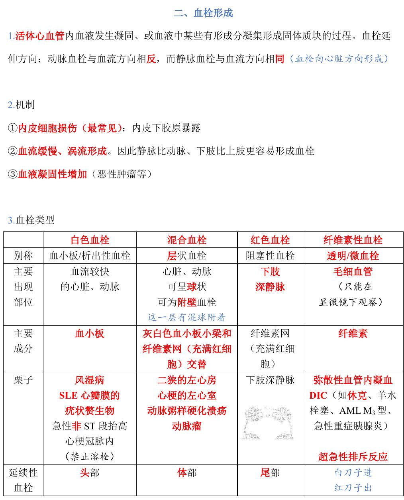
📷 讲义原图 · P3 · 血栓形成
A型·单选Q8P3 · 血栓形成
血栓形成最重要的机制/条件是
答案与解析
答案：A
机制：①内皮细胞损伤（最常见）②血流缓慢、涡流形成（静脉比动脉、下肢比上肢更易形成血栓）③血液凝固性增加（恶性肿瘤等）。
📖 讲义定位：P3 · 血栓形成
A型·单选Q9P3 · 血栓类型
白色血栓（血小板血栓/析出性血栓）的主要成分和好发部位是
答案与解析
答案：D
白色血栓：主要成分为血小板，好发血流较快的心脏、动脉（风湿病疣状赘生物、急性非 ST 段抬高心梗冠脉内——禁止溶栓）。
📖 讲义定位：P3 · 血栓类型
A型·单选Q10P3 · 血栓类型
发生于左心房内的球状血栓（如二尖瓣狭窄时）其类型是
答案与解析
答案：B
混合血栓（层状血栓）：心脏、动脉，可呈球状、可为附壁血栓（二狭左心房、心梗左心室、AS 溃疡、动脉瘤）。
📖 讲义定位：P3 · 血栓类型
A型·单选Q11P3 · 血栓类型
下肢深静脉内延续性血栓的尾部（阻塞性血栓）属于
答案与解析
答案：A
红色血栓：好发下肢深静脉；主要成分为纤维素网充满红细胞（比例似血液）。血栓延续：头部白色→体部混合→尾部红色。
📖 讲义定位：P3 · 血栓类型
A型·单选Q12P3–4 · 血栓类型
透明血栓（纤维素性血栓）的主要成分、部位和典型疾病是
答案与解析
答案：C
透明血栓（微血栓）：主要成分为纤维蛋白（纤维素），位于毛细血管、只能在显微镜下观察；典型疾病为 DIC（休克、羊水栓塞、AML M3、急性重症胰腺炎）和超急性排斥反应。
📖 讲义定位：P3–4 · 血栓类型
X型·多选Q13P4 · 血栓结局
关于血栓的结局，下列叙述正确的有
答案与解析
答案：ABC
D 错：再通不会恢复正常血流；另有营养不良性钙化（静脉石、动脉石）。
📖 讲义定位：P4 · 血栓结局
A型·单选Q14P3 · 血栓形成
动脉内血栓的延伸方向是
答案与解析
答案：D
血栓延伸方向：动脉血栓与血流方向相反；静脉血栓与血流方向相同（向心脏方向形成）。
📖 讲义定位：P3 · 血栓形成
三、栓塞7 题
A型·单选Q15P5 · 栓塞
栓塞最常见的栓子是
答案与解析
答案：D
栓塞：循环血液中出现不溶于血液的异常物质随血流运行阻塞血管；最常见栓子＝脱落的血栓。
📖 讲义定位：P5 · 栓塞
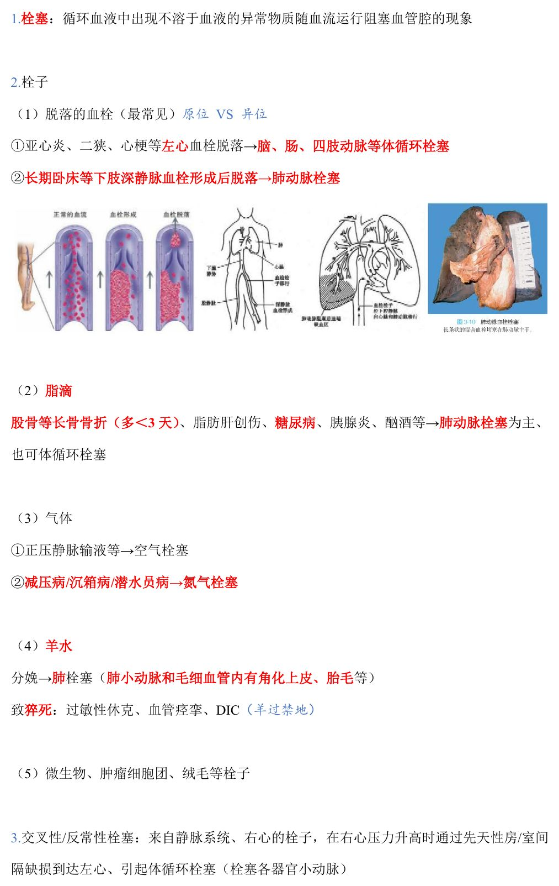
📷 讲义原图 · P5 · 栓塞
A型·单选Q16P5 · 栓塞
左心（亚急性心内膜炎、二尖瓣狭窄、心梗）血栓脱落主要引起
答案与解析
答案：B
左心血栓脱落→体循环栓塞（脑、肠、四肢动脉等）；长期卧床等下肢深静脉血栓脱落→肺动脉栓塞。
📖 讲义定位：P5 · 栓塞
A型·单选Q17P5 · 栓塞
股骨骨折患者突然出现呼吸困难、紫绀甚至死亡，肺动脉内最可能发现的栓子是
答案与解析
答案：C
脂滴栓塞：股骨等长骨骨折（多在 3 天内）、脂肪肝创伤、糖尿病、胰腺炎、酗酒→以肺动脉栓塞为主（也可体循环栓塞）。
📖 讲义定位：P5 · 栓塞
A型·单选Q18P5 · 栓塞
使用正压静脉输液时，可能发生的栓塞是
答案与解析
答案：A
气体栓塞：①正压静脉输液等→空气栓塞 ②减压病/沉箱病/潜水员病→氮气栓塞。
📖 讲义定位：P5 · 栓塞
A型·单选Q19P5 · 栓塞
深度潜水快速上浮时可能产生的栓塞是
答案与解析
答案：C
减压病/沉箱病/潜水员病＝氮气栓塞。
📖 讲义定位：P5 · 栓塞
A型·单选Q20P5 · 栓塞
羊水栓塞的特征性镜检发现是
答案与解析
答案：D
羊水栓塞：分娩时→肺栓塞（肺小动脉和毛细血管内有角化上皮、胎毛等）；致猝死机制：过敏性休克、血管痉挛、DIC（『羊过禁地』）。
📖 讲义定位：P5 · 栓塞
A型·单选Q21P5 · 栓塞
来自静脉系统、右心的栓子，通过先天性房/室间隔缺损到达左心引起体循环栓塞，称为
答案与解析
答案：B
交叉性/反常性栓塞：右心压力升高时静脉栓子经房/室间隔缺损至左心→栓塞各器官小动脉。
📖 讲义定位：P5 · 栓塞
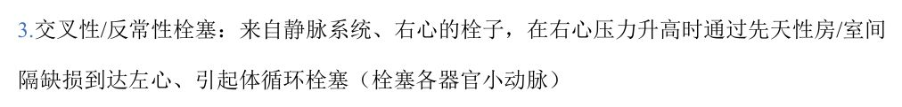
📷 讲义原图 · P5 · 栓塞
四、梗死6 题
A型·单选Q22P6 · 梗死
梗死最常见的原因是
答案与解析
答案：A
梗死原因：血栓形成最常见、动脉栓塞、动脉痉挛、血管受压闭塞。
📖 讲义定位：P6 · 梗死
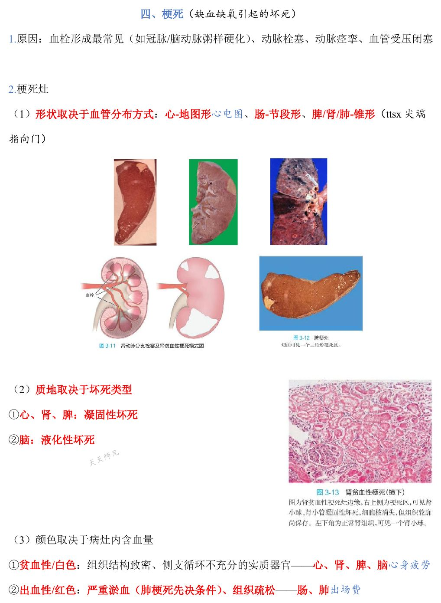
📷 讲义原图 · P6 · 梗死
A型·单选Q23P6 · 梗死
脾、肾梗死的形状是
答案与解析
答案：C
梗死灶形状取决于血管分布：心＝地图形、肠＝节段形、脾/肾/肺＝锥形（尖端指向门）。
📖 讲义定位：P6 · 梗死
A型·单选Q24P6 · 梗死
梗死灶的颜色主要取决于
答案与解析
答案：D
颜色取决于病灶内含血量：贫血性/白色＝组织结构致密、侧支循环不充分的实质器官（心、肾、脾、脑）；出血性/红色＝严重淤血、组织疏松（肠、肺）。
📖 讲义定位：P6 · 梗死
A型·单选Q25P6 · 梗死
肺发生出血性梗死的先决条件是
答案与解析
答案：A
出血性梗死条件：严重淤血（肺梗死先决条件）＋组织疏松（肠、肺）。
📖 讲义定位：P6 · 梗死
X型·多选Q26P6 · 梗死
容易发生出血性梗死的器官有
答案与解析
答案：CD
B、A 错：脾、肾为贫血性（白色）梗死；肠、肺为出血性（红色）梗死。
📖 讲义定位：P6 · 梗死
A型·单选Q27P7 · 小结
关于脑梗死的坏死类型和颜色，正确的是
答案与解析
答案：B
脑：液化性坏死、贫血性/白色梗死（心、肾、脾为凝固性坏死＋贫血性梗死；肠、肺为湿性坏疽＋出血性梗死）。
📖 讲义定位：P7 · 小结
本课速记卡
淤血（被动性充血）
- 肺淤血（左心衰）：急性＝毛细血管扩张、间隔水肿、肺泡内水肿液和红细胞；慢性再加心衰细胞、纤维化、肺褐色硬化
- 心衰细胞＝含含铁血黄素的巨噬细胞；肺褐色硬化＝含铁血黄素＋纤维化
- 肝淤血（右心衰）：槟榔肝（中央暗红＋周边脂肪变黄）→淤血性肝硬化
血栓 4 型速记
| 类型 | 成分 | 部位/栗子 |
|---|
| 白色血栓 | 血小板 | 心脏、动脉（风湿赘生物） |
| 混合血栓 | 血小板小梁＋纤维素网（红细胞交替） | 左心房球状、心梗左心室、动脉瘤 |
| 红色血栓 | 纤维素网＋大量红细胞 | 下肢深静脉（尾部） |
| 透明血栓 | 纤维蛋白 | 毛细血管；DIC、超急性排斥 |
血栓·栓塞·梗死要点
- 血栓机制：内皮损伤（最常见）、血流缓慢/涡流、高凝；延伸：动脉逆向、静脉顺向
- 结局：软化溶解吸收、机化、再通（不会恢复正常）、钙化（静脉石/动脉石）
- 栓塞：血栓脱落最常见；左心→体循环、下肢静脉→肺；脂肪（长骨骨折）、空气（输液）、氮气（潜水）、羊水（角化上皮/胎毛）
- 梗死：血栓形成为主因；形状（心地图/肠节段/脾肾肺锥形）；贫血性（心肾脾脑）/出血性（肠肺，需严重淤血＋疏松）
📚 网站题库（导入）8 组 · 12 题
说明：本部分为外部题库导入（来源：「西综题库」网站 · 病理学），题干、选项与答案保留原样；标注「教师补充」的答案未经讲义逐项复核。做题方式：点字母选择（多选后点【判卷】；答案可点开「答案与出处」查看）。
慢性左心衰B型题
A 肺褐色硬化
B 肺肉质变/机化性肺炎
C 巨噬细胞分解血红蛋白产生含铁血黄素（铁锈色痰）
D 巨噬细胞分解血红蛋白产生含铁血黄素（心衰细胞）
E 多累及双侧肺
F 慢性肺淤血
G 多累及单侧肺
H 肺泡的纤维素性炎
网站题W1第24讲 · 第2页
慢性左心衰
答案与出处
答案：ADEF
📖 第24讲 · 第2页
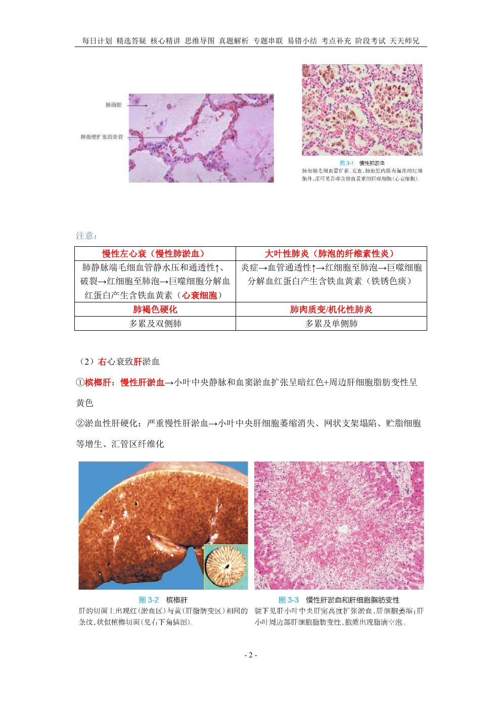
📷 讲义原图 · 第24讲 · 第2页
网站题W2第24讲 · 第2页
大叶性肺炎
答案与出处
白色血栓B型题
A 血小板/析出性血栓
B 阻塞性血栓
C 主要出现在心脏、动脉，可呈球状，可为附壁血栓
D 主要成分是血小板
E 主要出现在下肢深静脉
F 主要成分是纤维素
G 弥散性血管内凝血
H 主要成分是纤维素网（充满红细胞）
I 心梗的左心室
J DIC
K 急性非ST段抬高心梗冠脉内
L 主要成分是灰白色血小板小梁和纤维素网交替
M 动脉瘤
N 延续性血栓：头部
O 延续性血栓：尾部
P 层状血栓
Q 透明/微血栓
R 主要出现在血流较快的心脏、动脉
S 主要出现在毛细血管
T 风湿病、SLE心瓣膜的疣状赘生物
U 二尖瓣狭窄时的左心房
V 动脉粥样硬化溃疡
W 延续性血栓：体部
X 超急性排斥反应
网站题W3第24讲 · 第3页
白色血栓
答案与出处
答案：ADKNRT
📖 第24讲 · 第3页
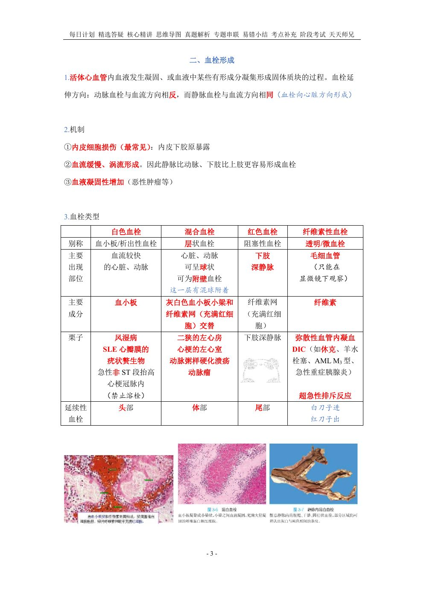
📷 讲义原图 · 第24讲 · 第3页
网站题W4第24讲 · 第3页
混合血栓
答案与出处
网站题W5第24讲 · 第3页
红色血栓
答案与出处
网站题W6第24讲 · 第3页
纤维素性血栓
答案与出处
【多选题】慢性肝淤血的病理变化有多项选择教师补充
A 槟榔肝
B 小叶中央见明显脂肪变性的肝细胞
C 严重时网状纤维可塌陷
D Disse间隙的肝星状细胞增生
网站题W7第24讲 · 第2页
【多选题】慢性肝淤血的病理变化有
答案与出处
【多选题】以下属于混合血栓的有多项选择教师补充
A 静脉延续性血栓的体部
B 冠状动脉粥样硬化溃疡处
C 二尖瓣狭窄的左心房内
D 弥散性血管内凝血的微循环
网站题W8第24讲 · 第3页
【多选题】以下属于混合血栓的有
答案与出处
【多选题】脂肪栓塞的原因有多项选择教师补充
网站题W9第24讲 · 第8页
【多选题】脂肪栓塞的原因有
答案与出处
答案：ABCD
📖 第24讲 · 第8页
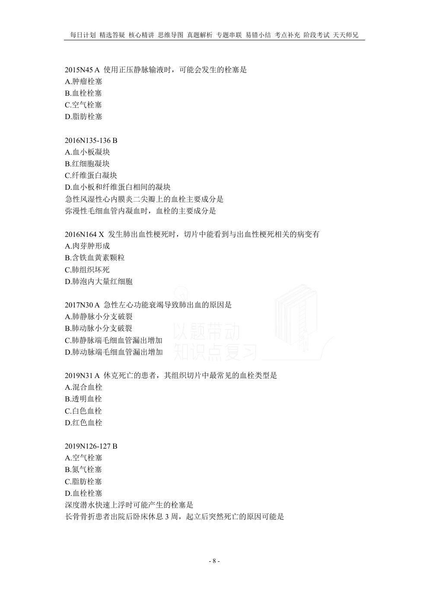
📷 讲义原图 · 第24讲 · 第8页
【单选题】羊水栓塞引起猝死的主要机制不包括单项选择教师补充
A 过敏性休克
B 羊水栓子阻塞肺静脉
C 反射性血管痉挛
D 引起DIC
网站题W10第24讲 · 第5页
【单选题】羊水栓塞引起猝死的主要机制不包括
答案与出处
答案：B
📖 第24讲 · 第5页
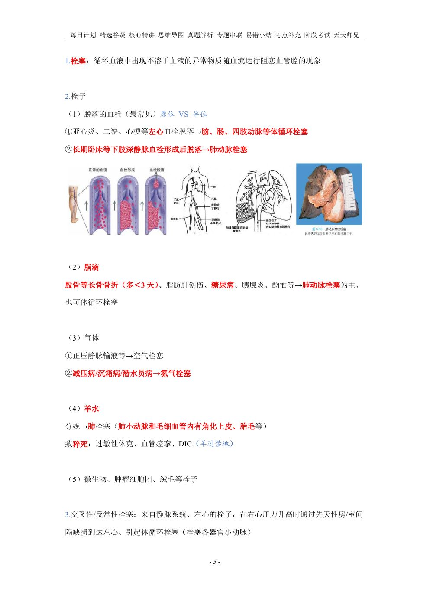
📷 讲义原图 · 第24讲 · 第5页
【多选题】分娩时,由于子宫强烈收缩,可引起多项选择教师补充
网站题W11第24讲 · 第8页
【多选题】分娩时,由于子宫强烈收缩,可引起
答案与出处
【多选题】肺出血性梗死的病理变化有多项选择教师补充
A 肺下叶、肋膈缘多见
B 病灶呈楔形,尖端朝向肺门
C 梗死灶呈凝固性坏死,可见肺泡轮廓
D 梗死灶呈暗红色,之后变成灰白色
网站题W12第24讲 · 第7页
【多选题】肺出血性梗死的病理变化有
答案与出处
答案：ABCD
📖 第24讲 · 第7页
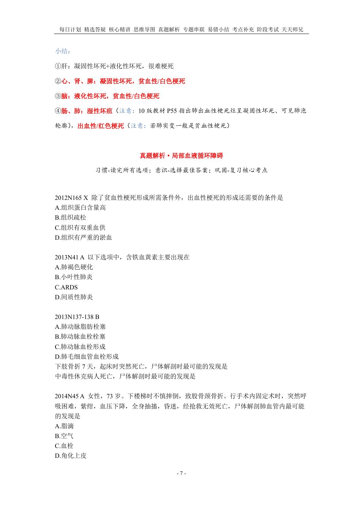
📷 讲义原图 · 第24讲 · 第7页
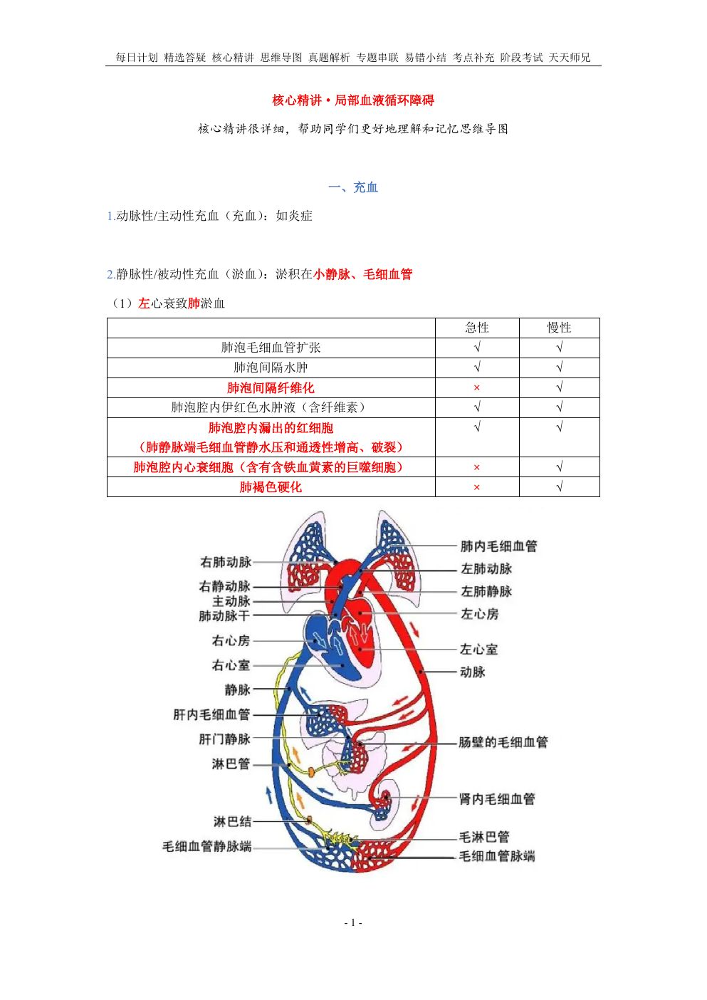
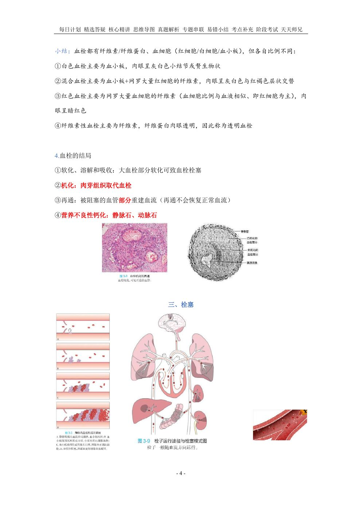
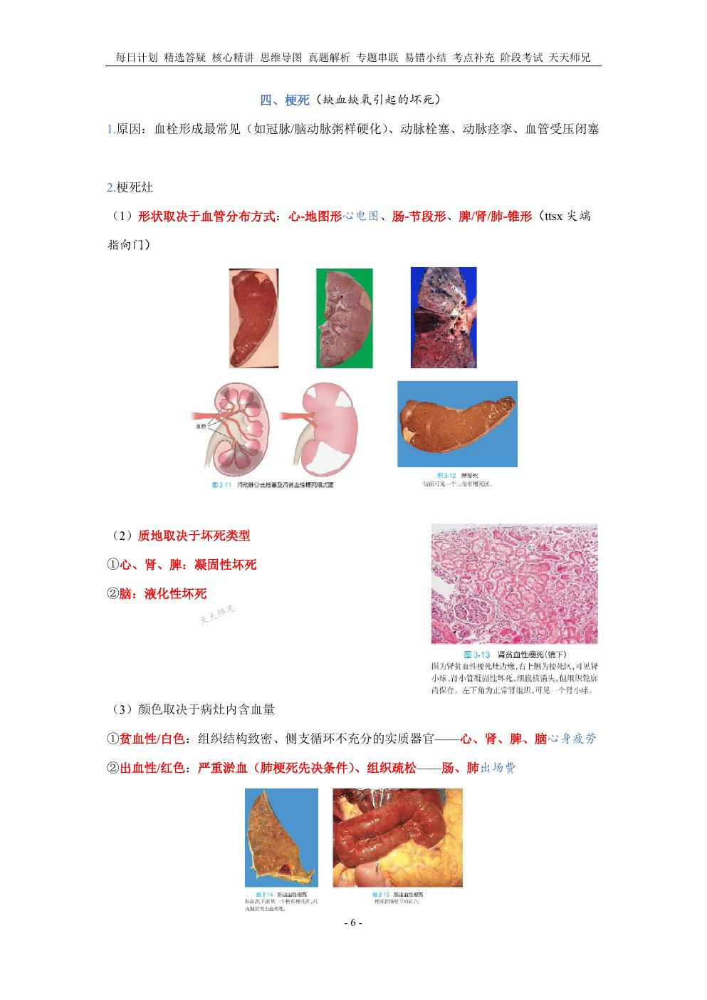
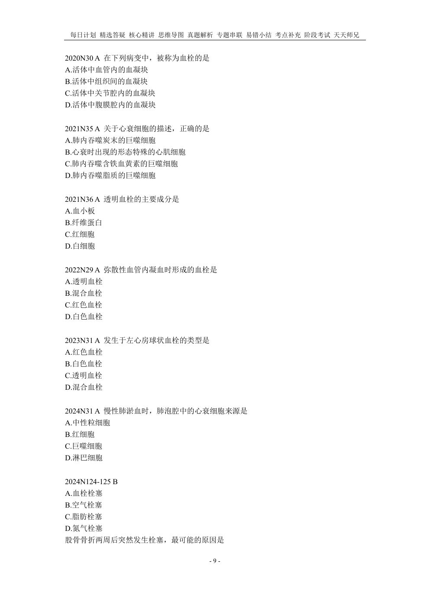
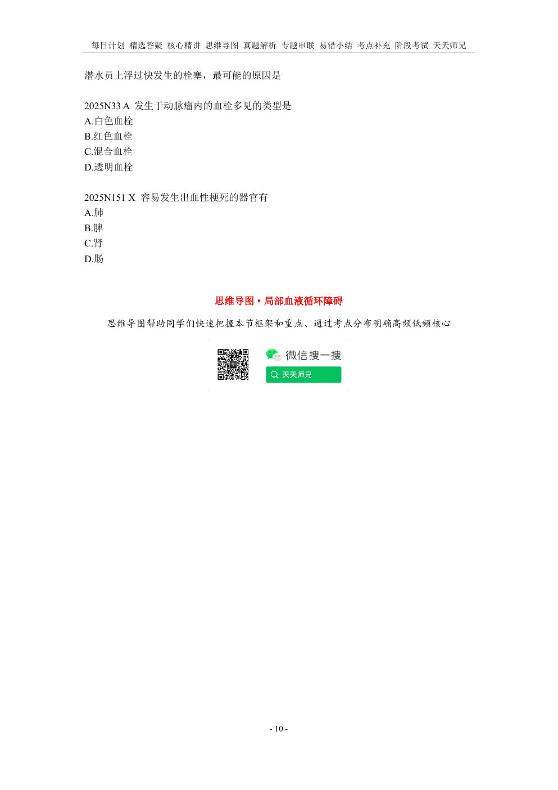